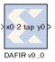

|
|
The Xilinx DAFIR filter block implements a distributed arithmetic finite-impulse response (FIR) digital filter, or a bank of identical FIR filters (multichannel mode).An N-tap filter is defined by N filter coefficients (or taps) h(0), h(1), ....,h(n-1). Here each h(i) is a Xilinx fixed-point number. The filter block accepts a stream of Xilinx fixed-point data samples x(0), x(1), ..., and at time n computes the output.The FIR block can be configured to have one to eight data channels as well as several optional ports.